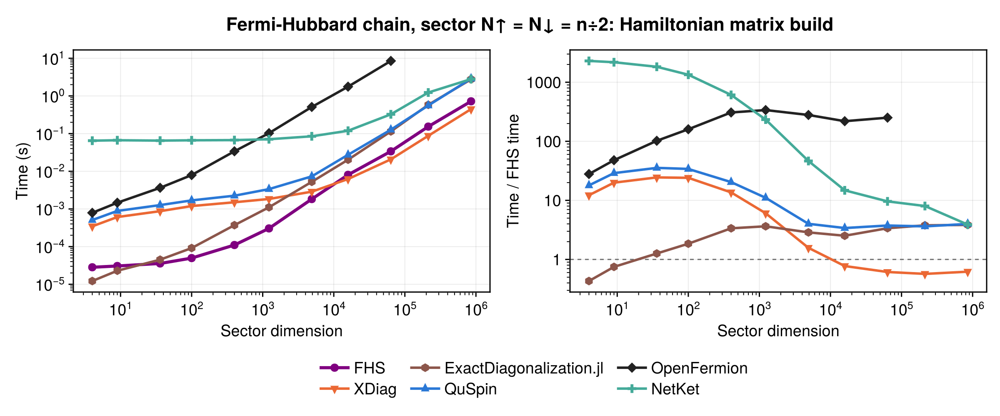
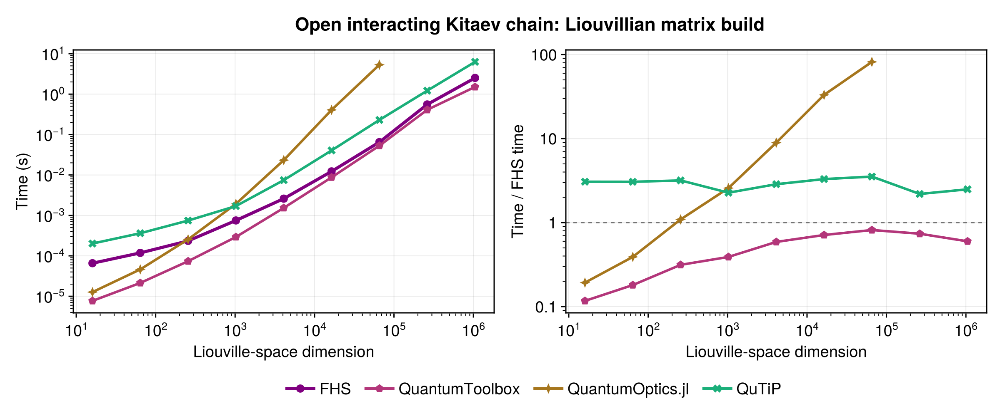
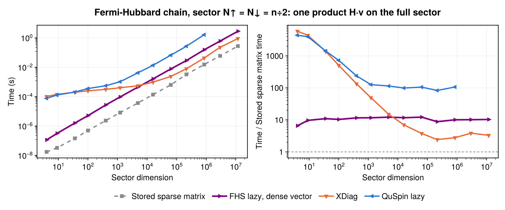

Benchmarks
The figures compare FermionicHilbertSpaces.jl (v0.10, Julia 1.13, single thread) with other libraries on the same models, using the minimum time over repeated runs on a single machine; compare curves within a figure, not times across figures. Each library builds its matrix from its own operator description where it has one; for the Liouvillian, FHS's symbolic description is not timed, while the other libraries build their operators from single-site matrices inside the timing. The resulting matrices are checked to have the same invariants (trace, norms, spectrum sum) up to a change of basis. The data come from a private benchmark suite. In each figure the right panel shows the time relative to FHS, except in the matrix-free figure, where it is relative to the stored sparse matrix.
Hamiltonian in a particle-number sector

Building the sparse Fermi-Hubbard Hamiltonian in a fixed-particle-number sector, basis construction included: FHS is fastest for intermediate sectors, ExactDiagonalization.jl is faster for the very smallest, and XDiag is faster from about 10^4 states upward.
Liouvillians

Building the Liouvillian of an open interacting Kitaev chain with loss: QuantumToolbox is faster than FHS at all sizes, FHS is faster than QuTiP at all sizes, and faster than QuantumOptics.jl above a few hundred states, where QuantumOptics.jl scales much worse.
Matrix-free products

One H·v product of the Fermi-Hubbard chain on the full sector N↑ = N↓ without storing the matrix: FHS's lazy operator is faster than QuSpin's at all sizes and faster than XDiag's below ~5000 states, XDiag is about 3x faster for large sectors, and the stored sparse matrix (the reference line, setup untimed) is faster than all of them, about 10x faster than FHS.
See Misc for multithreaded builds.